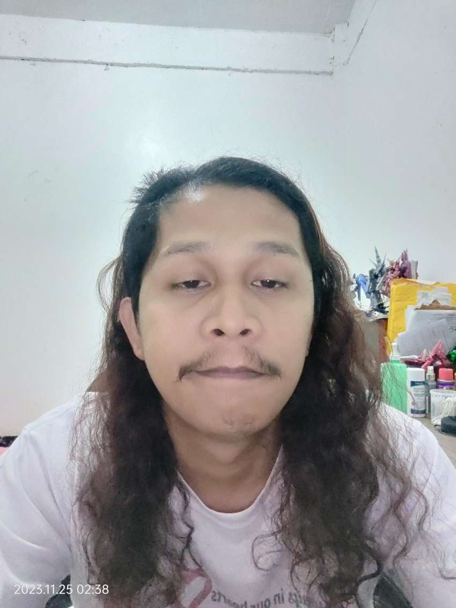

Mark Angelo
About
Contact

Mark Angelo Morre
WORK EXPERIENCE
-
NCH Software Jan. 2019 – Nov. 2023
Level 2 Technical Support and Forum Moderator
NCH Software provides programs for audio, video, business, dictation
and transcription, graphics, telephony and other utilities.
-
As a level 2 technician, I handle escalated tickets from level 1
support team, programmers and the support manager.
-
Provided technical support to end users via ticket, chat and
phone.
-
Create bug reports whenever certain problems are encountered
where I would replicate the issue, document and monitor
progress to keep both the end user and programmers posted as
needed.
-
Forum Moderator for the company’s online community where I post
questions, answers, and other content, maintain order throughout
the proceedings, ensuring that the interactions remain within the
identified topic.
-
Vodafone, Teleperformance Sept. 2015 – Dec. 2017
Technical Support, Subject Matter Expert
-
Provided high-quality level of support to Vodafone customers via
phone and email.
-
Scope of support is mainly ADSL, VDSL and POTS where I would
often work with the onshore team and field technicians in
monitoring and resolving critical issues.
-
As the assigned Subject Matter Expert (SME), I fully participate on
the assigned committee team from the start of the newly hired
inbound agents’ deployment to support and assist both Training team,
Vodafone and the agents themselves. Occasionally conduct trainings
as required by both the call center and Vodafone HQ.
-
AT&T U-verse, Sutherland Global Services Jun. 2012 – Apr. 2015
Technical Support
-
Cisco-Linksys, Synnex Concentrix Dec. 2011 – May 2012
Technical Support
-
Provide high-level technical support for Cisco and Linksys customers
and technicians alike. May also include upselling certain services
and products as needed to resolve the issue at hand.
EDUCATION
Notre Dame University 2007–2011
Studied Bachelor of Science in Mechanical Engineering Cotabato,
Philippines
Systems Technology Institute 2011 – 2012
Information Technology Kidapawan, Philippines
SKILLS & INTERESTS
Skills:
- communication;
- procedural documentation;
- problem solving
- customer service
- help desk support
- online moderation
- general sales
- product testing
- SOHO administration
- Windows.
Interests:
- Gunpla;
- heavy metal
- guitar;
- drag bikes
- Reddit;
- Tolkien;
- OnePiece
- memes.